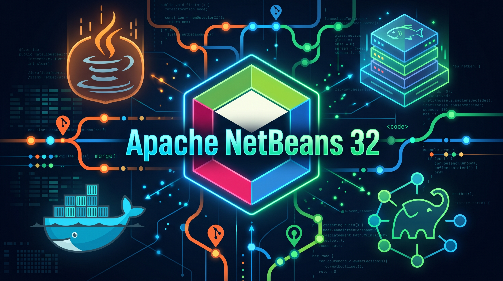

Apache NetBeans 32 a fost lansat: Suport GlassFish 8, îmbunătățiri Java/JDK 27 și actualizări pentru Gradle, Docker și Git

Echipa Apache NetBeans a anunțat lansarea versiunii 32, cea mai nouă ediție a mediului de dezvoltare integrat (IDE) gratuit și open-source pentru Java, PHP și alte limbaje de programare. Actualizarea extinde suportul pentru serverele Jakarta EE, rafinează editarea și depanarea Java și actualizează componentele interne pentru Gradle, Maven, Docker și Git.
1. Jakarta EE, GlassFish 8 și servere de aplicații
Suport extins GlassFish 8: IDE-ul recunoaște acum versiunile 8.0.1 până la 8.0.4, facilitând dezvoltarea și testarea aplicațiilor Jakarta EE.
Îmbunătățiri JSF (Jakarta Server Faces): Include suport pentru spații de nume URN personalizate ale componentelor, rezolvare mai precisă a bean-urilor Expression Language și avertismente pentru atribute duplicate în etichetele Faces.
Apache Tomcat și JavaFX: Componentele integrate Apache Tomcat au fost actualizate la versiunea 11.0.26, iar dezvoltatorii JavaFX primesc biblioteca OpenJFX FXML pentru definițiile interfețelor grafice bazate pe XML.
2. Editare Java, depanare și unelte de build (Gradle 9.8 / Maven)
Editare și indexare Java: Completarea automată a codului (code completion) a fost îmbunătățită pentru tipurile de intersecție (intersection types), mesajele de eroare sunt mai clare atunci când procesoarele de adnotări eșuează, iar indexarea surselor Java și suportul pentru opțiunea
--patch-moduleau fost remediate.Depanare interactivă: Consola de depanare (debugging console) oferă acum referințe clicabile către variabilele de tip obiect.
Gradle 9.8 și Maven: Integrarea Gradle a fost actualizată la versiunea 9.8. Pentru Maven, actualizarea remediază vizualizarea modelului efectiv POM, asigură compatibilitatea editorului cu JDK 27 și introduce o pauză automată la descărcarea indecșilor de la distanță atunci când sunt atinse limitele de rată (rate limits).
3. Docker, Git (JGit 7.7.1), PHP și interfața IDE-ului
Integrare Docker: Dezvoltatorii pot descărca (pull) versiuni actualizate ale imaginilor de container direct dintr-o etichetă existentă, iar fereastra de dialog Run permite definirea directă a variabilelor de mediu.
Git și semnare SSH: Biblioteca JGit a fost actualizată la versiunea 7.7.1, alături de componentele Bouncy Castle și Apache Mina SSH. Actualizarea aduce modificări pentru semnarea commit-urilor prin SSH și elimină încadrarea automată a liniilor (automatic line wrapping) din fereastra de dialog pentru mesajele de commit.
PHP, Web și UI: Dezvoltatorii PHP primesc remedieri pentru formatarea enumerărilor (
enum) ale căror nume coincid cu cuvinte cheie rezervate și o corecție pentru suprascrierea constructorilor. Editorul adaugă suport pentru pseudo-clasa CSS:host-context, îmbunătățește parsarea fișierelor XML cu marcaj BOM UTF-8 și actualizează motorul de indexare Lucene la versiunea 10.5.1. În interfață, proiectele imbricate (nested projects) sunt afișate grupat cu indentare, sortarea în vizualizările Projects și Files este mai consistentă, iar IDE-ul reține dimensiunile ferestrelor de administrare a proiectelor.